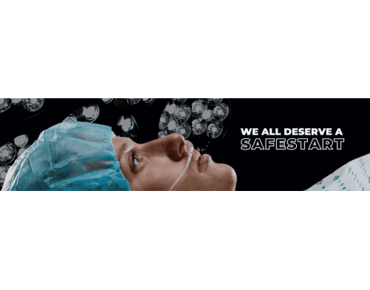

SafeStart Medical proudly announces the signing of a co-marketing agreement with USI.com.
USI is a middle market insurance broker. What truly distinguishes USI as a premier insurance brokerage and consulting firm is the USI ONE PATH™ , a game-changing value proposition that delivers to clients a robust set of risk management and benefit solutions with bottom line financial impact. USI ONE® represents Omni, Network, Enterprise—the three key elements that set USI apart from the competition.
USI sought out SafeStart as a vendor of a surgical risk management solution that eliminates never events for their client, the facility, staff, and patient.
USI clients can choose to enter USI PATH™ . “PATH is USI’s new game-changing platform that guides you through the entire risk control process, from identifying sources of loss to targeting solutions that maximize your return on investment.” Risk areas such as Infection control, fall prevention, surgical errors, etc. are listed. Users may select SafeStart
Medical’s safety system that eliminates surgical never events from the surgical errors domain.
SafeStart Medical offers USI client preferred pricing for deployment of SafeStart® and annual subscription/renewal. A USI provides ROI calculators to calculate 1-5 yr expected expense for never events minus the cost of the SafeStart subscription to eliminate the never events.
SafeStart will construct a landing page viewable by USI customers that contains more in depth information about SafeStart™ and its channel partner SecurPort™ by SecurLinx. USI does not charge vetted vendors for being listing in PATH. USI provides SafeStart with leads (not qualified).